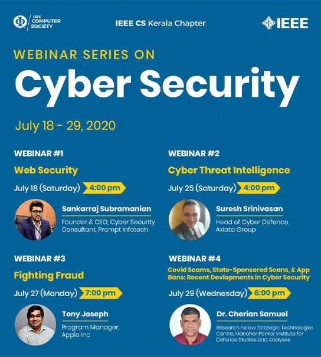
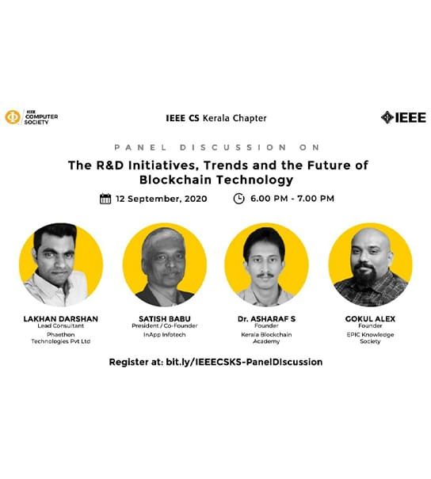
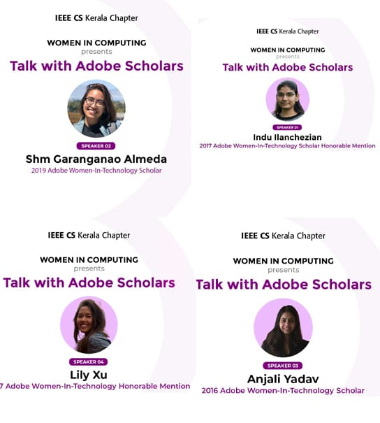

Updates From IEEE Computer Society Kerala ChapterWebinar Series – July

A 4-days webinar series on Cyber Security was organised by IEEE Computer Society Kerala Chapter from July 18, 2020,
to July 29 2020.
This series was conducted with the aim of introducing students into different fields and enhancing their knowledge in various tracks
of cyber security.
|
||||
Webinar Series – August
A 4-days webinar series on Blockchain was organised by IEEE Computer Society Kerala Chapter from August 8, 2020,
to August 28 2020.
This series was conducted with the aim of introducing students into different fields and enhancing their knowledge in various tracks
of blockchain.
|
||||
Webinar Series – September
A 3-days webinar series on Artificial Intelligence was organised by IEEE Computer Society Kerala Chapter from September 21, 2020,
to September 29 2020.
This series was conducted with the aim of introducing students into different fields and enhancing their knowledge in various tracks
of Artificial Intelligence.
|
||||
Panel Discussion on Blockchain

IEEE CS Kerala Chapter organised a panel discussion on
The R & D Initiatives, Trends and future of blockchain technology.
|
||||
Talk with Adobe Scholars

IEEE Computer Society Kerala and Women in Compute oraganized a series of talk with the past Adobe women in tech scholarship recipients where the scholars share their experience about the scholarship process and how to improve the chances of current applicants and future applicants. The eminent speakers of the talks were:
|
||||
PreXtreme Coding competitionIEEE Computer Society Kerala oraganized a PreXtreme coding competitionto help the participants of IEEEXtreme to hone their skills and abilities. With the aim to overall improve the results of IEEEXtreme 14.0 for kerala section the first preXtreme was conducted on 24 September 2020 |
||||
Student Branch Events
|
||||
UPCOMING EVENTSWebinar SeriesTaking the latest trends into consideration, IEEE Computer Society Kerala Chapter will be hosting webinars on the following topics next quarter
|
||||
|